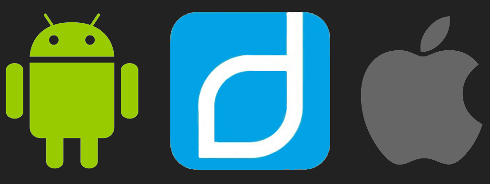

DIME
DISCOVER - INVITE - MEET - ENGAGE
Agenda
- Was wurde entwickelt?
- Warum?
- Wie wurde es entwickelt?
- Ergebnis
- Produktvideo
Was wurde entwickelt?
Es wurd eine plattformübergreifende App entwickelt, welches es ermöglicht Aktivitäten mit Freunden aber auch anderen Personen zu planen und an diesen teilzunehmen. Die Benutzerverwaltung wird dabei durch Facebook unterstützt, wodurch jeder Anwender die Möglichkeit hat über Facebook mit Personen zu interagieren. Die App pflegt dabei den eigenen Kalender und benachrichtigt den Anwender sobald er sich einer bevorstehnden Aktivität nähert oder eine neue Aktivität erstellt wird.
Warum?
Die App soll grundsätzlich eine Möglichkeit bieten, um auf einfachem Weg neue Leute kennenzulernen.
Wie wurde es entwickelt?
Grundlegende Technologie:
- Ionic 2 als Basis der App
- Entwicklung der App als Single-Page Application
- Angular 2 dient als Basis der Entwicklung
- Entwicklung der Komponenten mit: HTML5, CSS und TypeScript
- Firebase als Datenbankinfrastruktur
- Stellt eine NoSQL-Infrastruktur zur Verfügung
- Verwaltet die Benutzerverwaltung inklusive Facebook-Login
- Einfache Implementierung und Verwaltung
- OneSignal als Push-Provider
- 100% Fremium
- Bietet vollumfängliche Ionic-Support
- Einfache Integration
Verwendete Plugins:
| Plugins | Funktion in der App |
|---|---|
| cordova-plugin-calendar |
Prüft ob der Calendar zu einem Termin frei ist Trägt das Event in den Kalender des jeweiligen Nutzer ein |
| cordova-plugin-facebook4 |
Stellt den Login über Facebook bereit |
| cordova-plugin-geolocation |
Liest den aktuellen Standort des Users aus Ermgölicht die Berechnung der Entfernung zu einem Event |
| cordova-plugin-geofence |
Ermöglicht das Erstellen von Geofence-Areas für einzelne Events |
| cordova.plugins.diagnostic |
Ermöglicht die Überprüfung ob ein User seine Standortdienste aktiviert hat |
| ionic-plugin-deeplinks |
Ermöglicht die Erstellung von Deeplinks um einzelne Seiten der App zu erreichen |
Ergebnis
Nachfolgend sollen die Resultate der Entwicklung aufgezeigt werden:
Login

Bevor die App verwendet werden kann muss sich der Anwender zunächst einloggen. Hierfür wurde ein Facebook-Login implementiert. Dies bietet den Vorteil, dass Benutzerdaten über das Facebook-Profil bereitgestellt werden und so ein gewisser Grad an Seriösität garantiert werden kann. Die technische Umsetzung erfolgt dabei mit dem bereits vorgestellten Facebook-Plugin.
Aktivität erstellen

Die Idee der Anwendung ist darauf ausgerichtet, dass Anwender Aktivitäten erstellen und weitere Anwender daran teilnehmen können. Hierfür muss der Ersteller zunächst die Kategorie für die Aktivität bestimmten, den Ort auswählen (überfolgt mit Hilfe von Google Maps), die Teilnehmeranzahl festlegen, das Datum und die Dauer bestimmen sowie zusätzliche Informationen angeben. Andere Anwender erhalten anschließend eine Push-Benachrichtung, sollten sie sich für die ausgewählte Kategorie interessieren und sich in der entsprechenden Entfernung zur Aktivität befinden. Bei der Erstellung wird beim Ersteller zusätzlich im Kalender des Betriebssystems ein Termin für die Aktivität erstellt.
Aktivitäten

Startseite der Anwendung ist die Übersicht über die bereits erstellten Aktivitäten. Hier wird grundsätzlich zwischen erstellten Aktivitäten von Freunden und anderer Personen unterschieden. Diese Aktivitäten können über eine Reichweite gefiltert und somit die Anzeige aktualisiert werden. Wird eine Aktivität ausgewählt so kann hier entsprechend teilgenommen werden. Diese Funktione wird im Folgenden noch im Detail vorgestellt.
Meine Aktivitäten

Damit der Anwender einen Überblick über seine eigenen Aktivitäten erhält und zusätzliche über die Aktivitäten an denen er teilnimmt bzw. teilgenommen hat wurde ein Übersichts-Screen für die eigenen Aktivitäten entwickelt. Dieser ist, wie bereits angedeutet, in "Eigene", "Bevorstehende" und "Vergangene" Aktivitäten unterteilt. Hier besteht für den Anwender auch die Möglichkeit seine eigenen Aktivitäten wieder zu löschen.
Aktivitäten Details

Wählt der Anwender eine Aktivität aus so wird dieser auf die Details zur Aktivität weitergeleitet. Hier hat er die Möglichkeit der Aktivität zuzusagen, aber auch wieder abzusagen. Zusätzlich hat er hier den einen Überblick, welche Anwender bereits an der Aktivität teilnehmen und wann und wo diese stattfindet. Desweiteren kann der Anwender die Aktivität mit Freunden bspw. über WhatsApp teilen. Hierdurch ensteht ein sogenannter Deep-Link
Kategorien

Mit Hilfe der Kategorien soll dem Anwender ermöglicht werden, dass er auswählen kann für welche Kategorien er sich interessiert und für welche nicht. Somit bekommt der Anwender auch nur über die ausgewählten Kategorien eine Benachrichtigung (Push-Benachrichtung und Geofence-Areas) über neue Aktivitäten. Ändert der Anwender seine Kategorien-Auswahl so werden die Benachrichtigungseinstellungen entsprechend aktualisiert.
Profil

Damit der Anwender sich vorab einer erstellten Aktivität über den Organisator informieren kann, wurde ein Profil-Screen entwickelt, welcher auf das Facebook-Profil des Organisator verlinkt. Zusätzlich ist es dem Anwender möglich im Anschluss an eine Aktivität den Organisator und die anderen Teilnehmer zu bewerten. Somit ergibt sich ein Bewertungssystem für einzelne Anwender. Dies soll ebenfalls zur Seriösität beitragen.